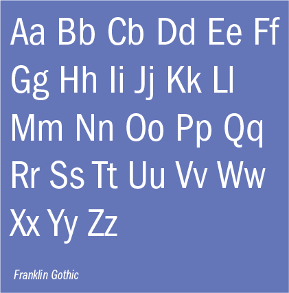

Overview
Franklin Gothic
Designed by Morris Fuller Benton, 1905
Franklin Gothic was originally designed in 1905 by Morris Fuller Benton. It was the third font for the American Type Founder's Company. Franklin Gothic was likely influenced by popular "grotesk" fonts from Germany that started emerging in western culture around the same time. These early san-serif fonts were known as "gothic" in America. Franklin Gothic became popular for advertising and promotional work in the 1900s. There are two other versions of Franklin Gothic: Franklin Gothic UWR and ITC Franklin Gothic. Franklin Gothic was updated to the widely-used ITC version by Victor Caruso in 1980.
ITC Franklin Gothic Fonts
Trade Gothic
Designed by Jackson Burke, 1948
Trade Gothic is a san-serif typeface created by Jackson Burke in 1948 when he was the director of typography at Lynotype in the US. He continued to work on it, and it was finally completed in 1960 with three widths and three wights. It has 14 different styles total. People refer to it as the "American Gothic." It was created in the time period between the quirky fonts of the late 19th century and the modern designed fonts of the 20th century.